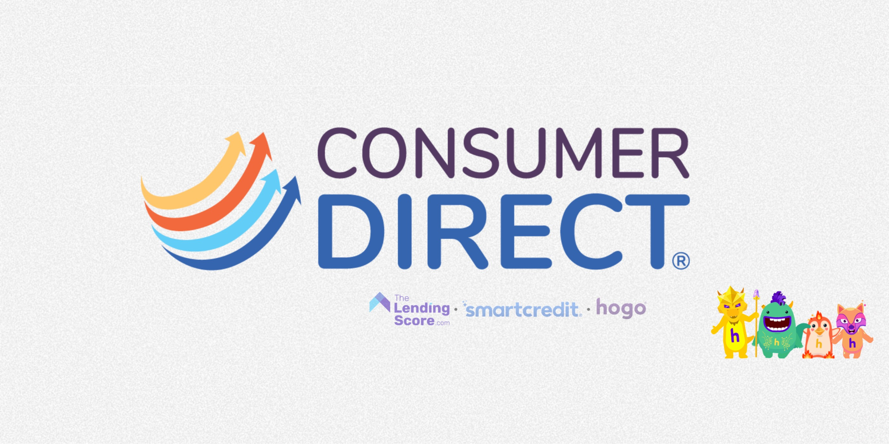
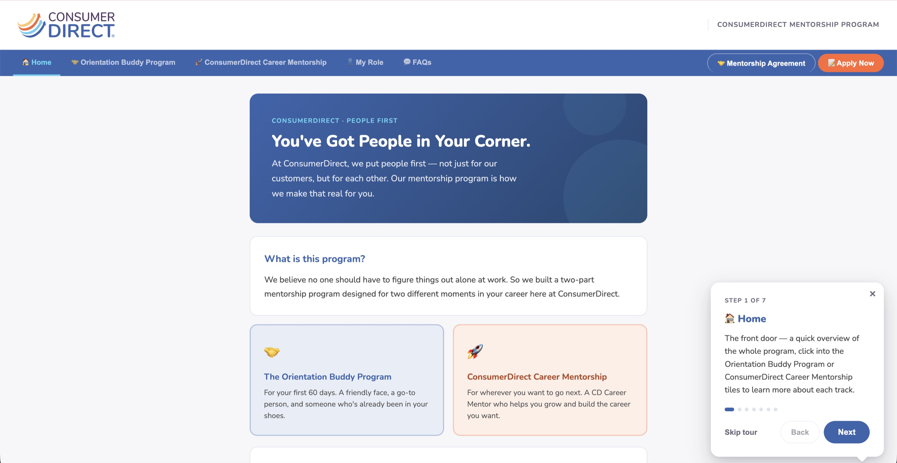
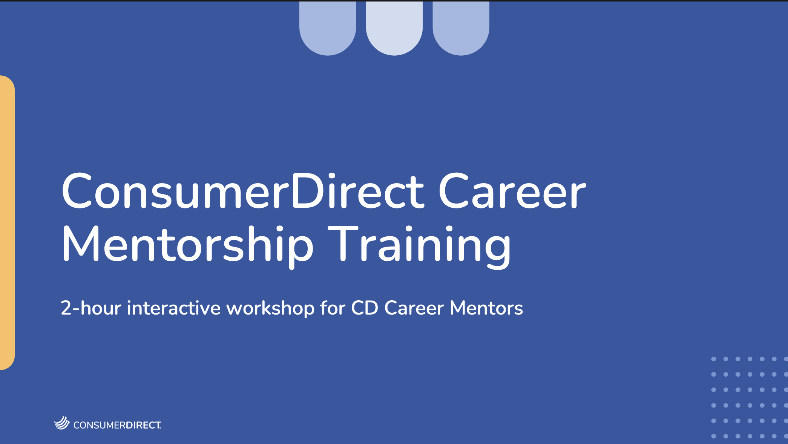

Close ✕

ConsumerDirect had a People First philosophy and no structured way to live it. New hires and employees looking to grow were both relying on whoever happened to be nearby.
I joined People Operations as an intern and left having founded the company's first mentorship program. The scope covered everything between the idea and the launch: designing the program structure, defining every participant role, building the website employees use to understand and join it, and writing the training that prepares mentors before they take on someone else's growth.
This was a solo project. I was the only person who worked on it, which meant the program design and the thing people actually see were shaped by the same set of decisions.
One program could not serve both a nervous first-day hire and an employee three years in who wants a promotion.
So I built two. They share a philosophy and a website but run on separate timelines, with separate expectations and separate training — because the support someone needs in week one has almost nothing in common with the support they need in month five.
A mandatory 60-day program for every new hire, automatically assigned. Buddies are established employees — six months minimum tenure — acting as insider guides rather than managers. The timeline moves through foundation in week one, navigation in weeks two and three, settling in through week six, and graduation by week eight.
A six-month open-enrollment program running January and July cohorts. Participants set defined career goals and drive the relationship themselves, with bi-weekly meetings, a midpoint assessment, a visibility-building phase, and graduation. The governing principle: you own this relationship.
Most mentorship programs fail quietly, because nobody is certain what they are supposed to do.
I wrote a definition for all five perspectives the program touches — new hires, orientation buddies, mentorship participants, career mentors, and managers — and gave the site a dedicated My Role page so anyone can find their own expectations in one place instead of inferring them.
The hardest ones to write were the three below. Each depends on drawing a line the person might otherwise cross with good intentions.
Reach out before the new hire arrives, facilitate introductions, and give real-world guidance on how things actually work. Explicitly not a manager, and explicitly safe: there are no dumb questions with your Orientation Buddy.
Offer honest feedback and support growth without solving the problem for the participant. The distinction between advising and rescuing is the whole job, and it is what the mentor training spends most of its time on.
Champion participation, nominate strong candidates for buddy assignments, and acknowledge the employees doing the work. Without this the program depends entirely on volunteer goodwill.
A program that lives in a PDF does not get joined. I built the site so every question an employee might have has a page to land on.
Hand-written in HTML and deployed with GitHub Pages, which kept the whole thing maintainable by People Operations without a CMS or a vendor. Seven destinations: Home, Orientation Buddy Program, ConsumerDirect Career Mentorship, My Role, FAQs, Mentorship Agreement, and Apply Now.
The structure follows the reader rather than the org chart. Someone arrives wanting to know what this is, whether it applies to them, what they would be signing up for, and how to start — so the navigation moves in that order, ending at Apply Now. Expandable FAQ sections keep the long answers available without burying the short ones, and the Mentorship Agreement gives the commitment somewhere concrete to live.
The home page splits the audience in its first screen — two tiles, first 60 days or wherever you want to go next — so nobody reads about the wrong track. For anyone who would rather be walked through it, a seven-step guided tour introduces each destination in turn.
View Live Site →
Assigning someone a mentor they are not prepared to be is worse than assigning nobody at all.
I designed the training presentations for both roles, built around the failure modes each one runs into. Mentors over-solve. Buddies either overwhelm a new hire in week one or vanish by week three. Naming those patterns up front does more than a list of responsibilities ever would.
A two-hour session covering goal-setting, honest feedback, and the line between supporting growth and taking over. Backed by a dedicated Slack channel so mentors can get peer support mid-relationship instead of only at kickoff.
Paced to the 60-day timeline: what to do before the new hire's first day, what the first week needs, and how to taper toward graduation rather than dropping off. Focused on being reachable over being impressive.

The program launched during my internship and now runs on its own: buddies assigned automatically to every new hire, career mentorship opening twice a year, and a site People Operations can maintain without engineering help.